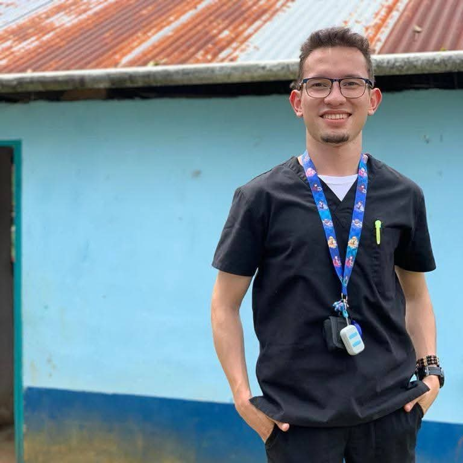
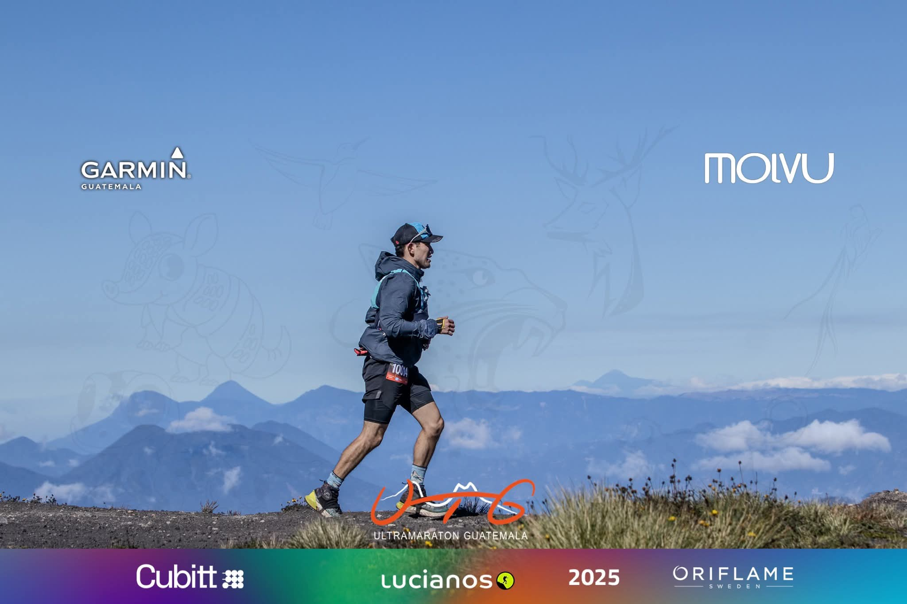
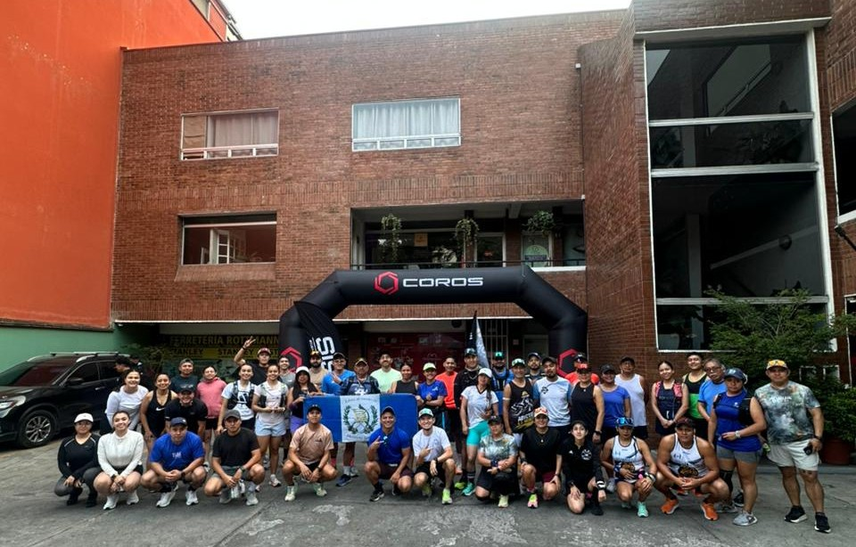

"La libertad de expresarse"
Por: Fatima J. Gallo

Universidad de San Carlos de Guatemala egresado y médico de Hospital Herrera Llerandi, David Gallo explica que no todos los médicos llevan un estilo de vida saludable. Según comenta, las largas jornadas, los desvelos, el estrés constante y la mala alimentación suelen formar parte de la rutina médica. Sin embargo, considera que el equilibrio depende de cuánto espacio permita cada persona a su vida fuera del trabajo. Para él, correr comenzó como una forma de enfrentar un periodo de depresión y poco a poco se convirtió en una herramienta para mejorar su salud mental y emocional.

David encontró en el trail running una pasión que transformó su rutina diaria. Describe este deporte como una actividad que le brinda sensación de esfuerzo, superación y logro, además de ayudarle a enfrentar días difíciles y estresantes. También menciona que el contacto con la montaña intensifica esas emociones positivas. Gracias a esto, logró equilibrar su profesión con el deporte al establecer horarios laborales definidos que le permitieran dedicar tiempo a otras áreas importantes de su vida. Actualmente considera el trail running un eje fundamental de su existencia y asegura que desea seguir practicándolo durante muchos años más.

El conocimiento médico de David también le ha servido para mejorar su rendimiento deportivo, especialmente en aspectos relacionados con nutrición, recuperación y entrenamiento físico. Desde que comenzó a correr, afirma que su vida cambió de manera positiva: fortaleció la relación con su familia, encontró una comunidad de apoyo y vivió experiencias que nunca imaginó. Entre sus mayores logros destaca haberse graduado como médico y cirujano, así como posicionarse como corredor destacado dentro de la comunidad del trail running. Finalmente, asegura que si pudiera hablar con su “yo” del pasado, le diría que continúe adelante a pesar del miedo y la incertidumbre, porque no es necesario tener todas las respuestas para seguir creciendo.